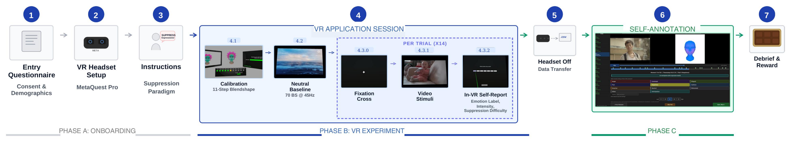

Data collection pipeline
Participants wore a Meta Quest Pro headset and viewed 14 validated emotion-elicitation stimuli under a suppression paradigm. Blendshape time series were captured continuously at 45 Hz alongside head pose, confidence scores, and phase labels. Post-session, participants annotated detected activation peaks via an avatar-replay interface.

Figure 1. End-to-end data collection pipeline under suppression paradigm: onboarding, VR experiment session (calibration, neutral baseline, 14 stimulus trials with in-session self-report), and post-session retrospective annotation.
Retrospective annotation interface
Participants review TRM-detected peaks alongside the stimulus video and an avatar replaying their recorded blendshape activations, assigning emotion labels and intensity ratings.